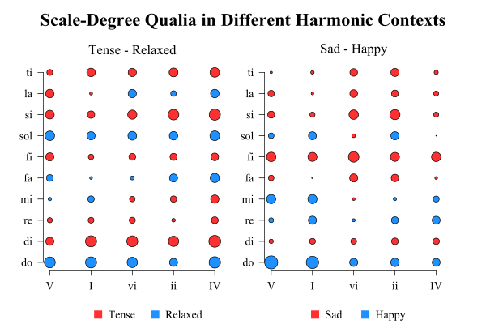
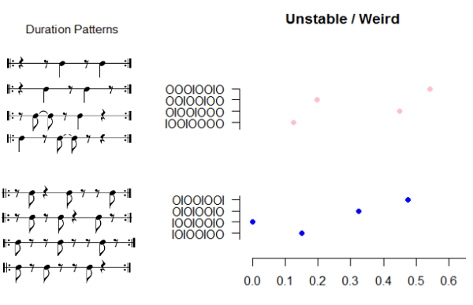
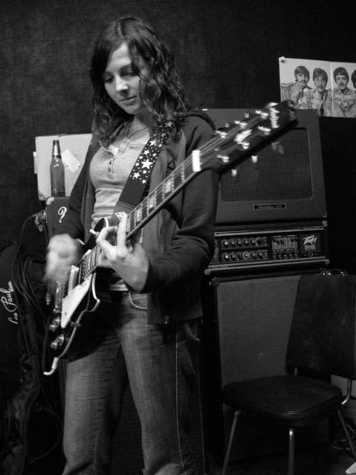

A Systematic Musicologist for Life: Introducing Claire Arthur
Posted by ehopkins on August 02, 2016
In today’s post, I’m excited to introduce our new post-doc, Claire Arthur! She comes to us most recently from Ohio State University, where she defended her dissertation this past May working under David Huron. She’ll be heading up our analysis axis alongside Julie Cumming and continuing postdoc Reiner Krämer. She’s pictured below in Athens, Greece.
Emily Hopkins: Where are you originally from? What are some highlights: places you’ve lived, schools you’ve studied at, jobs you’ve done?
Claire Arthur: I grew up in Dundas, Ontario, close to McMaster University. I did my undergrad at the University of Toronto, and my master’s at the University of British Columbia. I spent most of my life as a young adult waitressing to pay my way through school. My favourite waitressing gig was at Joe’s Grill in Vancouver, BC – great breakfast joint!
EH: How did you first hear about SIMSSA?
CA: I first heard about SIMSSA while attending a Music Informatics Group meeting at the annual conference for the Society of Music Theory (SMT) last year in St. Louis. Reiner was giving a presentation about some of his work on the SIMSSA project.
EH: What’s the first project you’re looking forward to working on here at McGill? Other things you’re looking forward to?
CA: I’m very much excited about digging into some new projects. The first project I have in mind has to do with investigating voice-leading rules using a corpus-based approach: First showing systematic preferences or aversions for certain voice-leading practices in common practice era music, and if that can be clearly established, taking those rules and applying them to older and older corpora in an attempt to locate the origins of certain voice-leading practices. I’m also looking forward to getting to know the members of the DDMAL lab and the ELVIS project, and am excited to get my tour or CIRMMT and see what kinds of research are happening there.
EH: Have you spent much time in Montreal before? Anything in particular you’re excited about?
CA: I had only been to the city once before, many years ago. I’m excited about bagels! And it’s a great excuse for me to regain some fluency in French!
EH: You defended your dissertation in May. (Congratulations!) Can you give us the elevator-speech version of what you worked on?
CA: My dissertation took an empirical approach to the topic of musical ‘qualia’ (or the ‘feel’ of some musical object), specifically looking at the effects of the local musical context. So, we think of scale-degree 7 (or ‘ti’) as having a leading quale; but what happens when you put it in the context of a mediant (III) chord? Similarly, certain duration patterns might evoke certain qualia, but those qualia might be subject to change given the metric framework. My work used corpus study to investigate the changes in melodic probabilities when harmonic accompaniment was considered. Building on the notion that qualia arise from statistical learning, I then carried out various perceptual experiments demonstrating that the qualia can change depending on local contextual information.

Scale-degree qualia ratings. Qualia ratings for each scale-degree across harmonic contexts. There is one graph per slider. On the x-axis, each Roman numeral represents the final chord of each possible progression. Scale-degrees are listed on the y-axis. Each circle represents the average rating across all participants for that particular scale-degree following the given harmonic context. Colour codings indicate which side of the slider the value falls on. The larger the circle, the more extreme the average rating.

Rhythm qualia ratings. Dots located along the x-axis indicate the proportion of participants who checked “unstable/weird” as applying to the given rhythm, represented along the left in both traditional notation as well as with the onset/offset notation. Colour codings group rhythms that are rotations (i.e. phase-shifted) of each other. Note how patterns with onsets in strong positions are less likely to be heard as unstable.
EH: You’ve done a lot of research on cognitive science and music perception. How do you see this relating to your work at SIMSSA, or more generally to the idea of music searching?
CA: It is easier for me to see how music search and analysis can inform music perception, although I’m sure that over time my knowledge of the music perception literature may aid or inform my work on music search and analysis!
Typically, in perception research, we are interested in how much top-down and bottom-up processes contribute to musical processing. It is fairly well established that statistical learning plays a large role in perceptual processing, and so the more knowledge we have about the statistical properties of various aspects of music, the more this can guide or inform perception experiments. In this way, analysis of symbolic music can fill gaps in perceptual knowledge by providing models of musical patterns on which the perception may be based. For example, as mentioned, part of my dissertation involved looking at changes in melodic probability when the information from the harmonic accompaniment is taken into account. This generated scale-degree ‘profiles’ that were quite different from other published note transition probabilities that were based on monophonic music. One associated perceptual question is whether one’s melodic expectations can be systematically altered by setting the same tune in different harmonic contexts. Although it seems a likely hypothesis, it remains to be tested empirically.
EH: When did you first start using computers as tools for music research? What are your favourite and least favourite things about this approach?
CA: While I had dabbled a little in music recording, I didn’t begin using computers for music research until I arrived at Ohio State. David Huron is the founder of Humdrum, and so it wasn’t long before he was showing me the kinds of things that could be done with it. I immediately signed up for his Humdrum class in my first year and have been using it ever since.
I think my stance on computer-assisted research in music is probably similar to most, in that it allows the researcher to carry out projects looking at a large amount of material at once, so you get a better sense of things like trends over time, or patterns that emerge from a whole genre, style, or composer. As researchers we get this breadth and depth that just wouldn’t be possible with manual analysis alone. On the other hand, this breadth and depth typically comes at the expense of detail, and so at times the results can seem naive. In addition, sometimes operationalizations of music-theoretic rules have to be simplified; either to make a complex computation workable or else to find meaningful patterns, in which case the results and their application to other processes or analyses must be used with caution. Two pet peeves of mine are 1) scholars (myself included) are often at the mercy of convenience samples to carry out some research question, or, 2) some ‘big data’ becomes available which leads to a rush of excitement over using the data without much consideration for the larger musical context or the project’s significance to ‘musical’ questions or problems. In my opinion, though, the pros still outweigh the cons!
EH: Tell me more about your experience of learning to code.
CA: When I arrived at Ohio State, I immediately had projects I wanted to work on, and those projects involved either extracting information from symbolic music notation, setting up basic computer programs to run perceptual experiments, and tools for analyzing the data from both. Unfortunately I knew how to do none of those things at the time! And the music department at Ohio State doesn’t have lab techs, so it’s really important to learn this stuff (although I had a lot of help from David Huron and fellow CSML members). So I basically dove into trying to develop all three skills simultaneously, which, for me, meant learning some Humdrum (and Bash), some R, some Matlab, and a little bit of Python. Once I started to learn them, I realized (just as with any skill) how much there was to know, and how little I actually knew. But at the same time, it opened up this whole new world for me. It was like someone turning on the lights. I’m now a systematic musicologist for life.

EH: In addition to your work in music theory and cognition, what other musical activities have you been involved in?
CA: After finishing my master’s and before beginning my PhD, I maintained a busy piano studio in Vancouver, BC from 2008 to 2012. I taught piano lessons and music theory to both children and adults. I was trained as a classical pianist, but I also play guitar and a bit of drums. My most recent obsession, however, has been learning to play the cello. I’m hoping to find some time to squeeze in some lessons while here in Montreal.